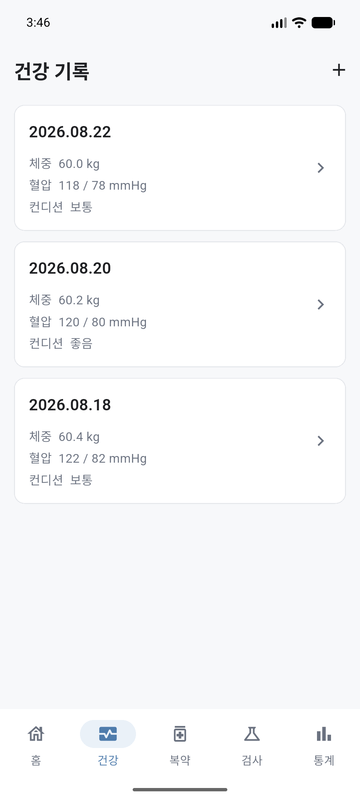
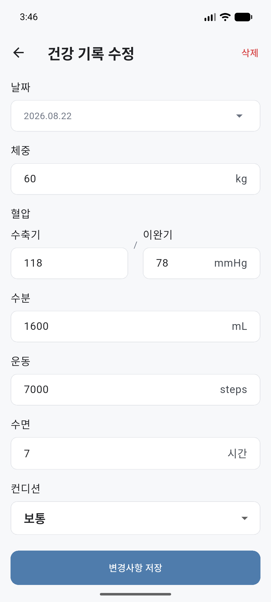
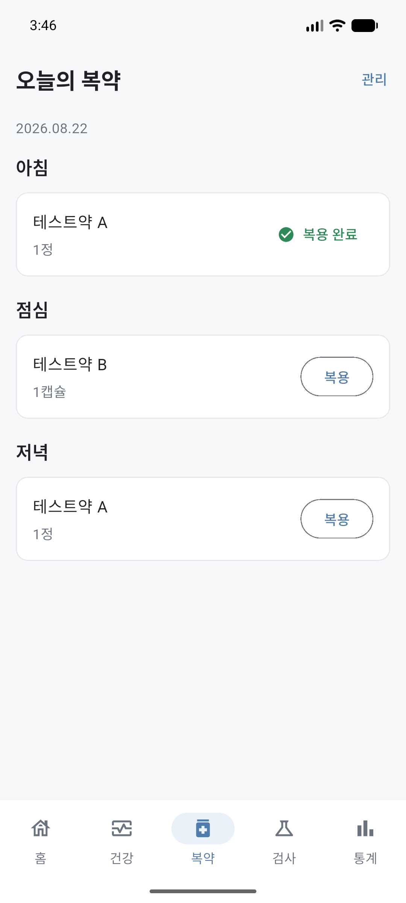
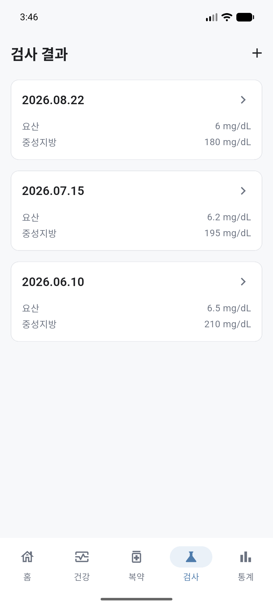
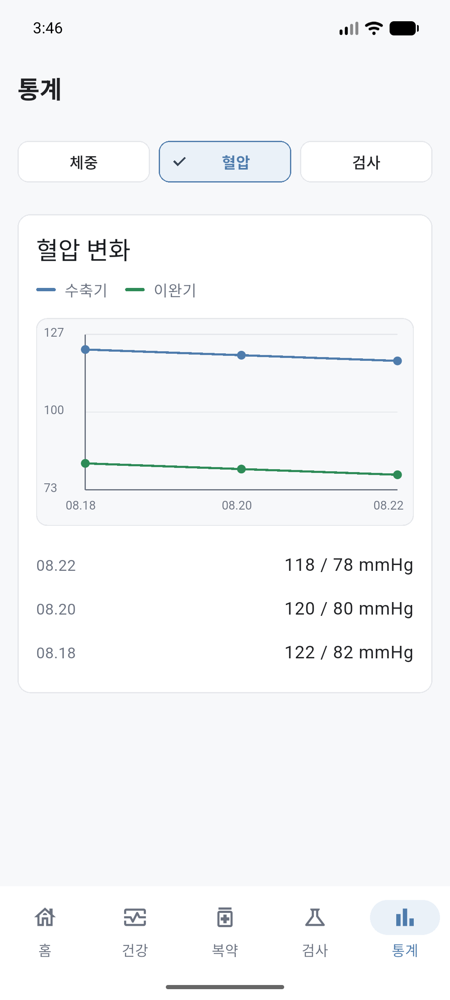
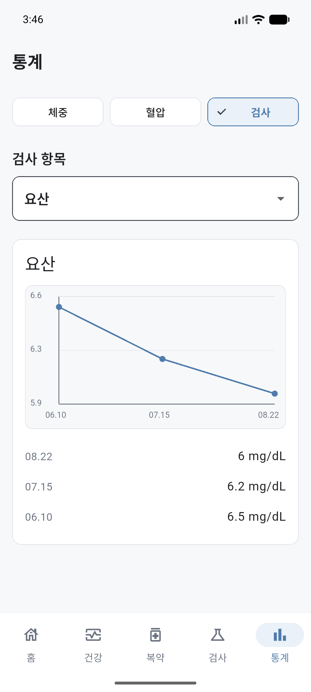

Project Overview
Project TypePersonal QA Project
PlatformAndroid / Flutter
DataSQLite Local DB v3
Version1.0.1+2
ScopePlanning / Implementation / QA / Regression / Release
QA Case Study · V1.0.1
Flutter 기반 개인 건강 기록 앱을 직접 기획하고 구현한 뒤, 요구사항 기반 QA부터 Regression, Android Release까지 검증한 개인 QA 프로젝트입니다.
Projects로 돌아가기
체중, 혈압, 수분, 운동, 수면, 컨디션, 복약, 검사 결과를 날짜 기준으로 기록하고 비교하기 어렵다는 문제를 V1 범위로 정의했습니다.
QA 관점에서는 어떤 데이터가 어떤 화면과 상태에 영향을 주는지 기준을 세우고 CRUD와 데이터 일관성을 검증하는 데 초점을 맞췄습니다.
| TC ID | Area | Scenario | Result |
|---|---|---|---|
| TC-HLTH-007 | Health | 동일 날짜 HealthRecord 중복 방지 | PASS |
| TC-MED-006 | Medication | Soft Delete 후 현재 목록 미노출 | PASS |
| TC-MLOG-004 | MedicationLog | 동일 medicationId/date/timeSlot 중복 방지 | PASS |
| TC-LAB-004 | Lab | 동일 date + testName 중복 방지 | PASS |
| TC-STAT-003 | Statistics | Health 수정/삭제 후 체중 통계 갱신 | PASS |
| TC-STAT-007 | Statistics | Lab unit 없음/불일치 처리 | PASS |
| TC-DB-003 | Persistence | 앱 재실행 후 데이터 유지 | PASS |
| TC-NAV-002 | Navigation | Add/Edit 화면 Bottom Navigation 미표시 | PASS |
기존 DB를 삭제하거나 초기화하지 않고 onUpgrade Migration으로 확장했으며, HealthRecord 유지, Medication 추가 후 기존 데이터 보존, Lab 추가 후 Health/Medication 보존, 앱 재실행 후 Persistence를 검증했습니다.
STEP 15 당시 테스트 범위에서는 발견 결함이 없었고, BUG-001은 Release 이후 Portfolio Visual QA에서 추가로 발견해 수정 완료한 결함입니다.
APK는 Internal Portfolio Release로 관리하며, 이 페이지에서는 다운로드 링크를 제공하지 않습니다.





